Bədii nəsr
Vətən hissləri; Xədicə; Cıdır düzü; Nur; Fısdıq ağacı; Haram; Mən kimdən artığam ki ...; Oğlu; Sizinlə vidalaşmıram; Anamın dolması
Bədii nəsr hekayələri

Vətən hissləri; Xədicə; Cıdır düzü; Nur; Fısdıq ağacı; Haram; Mən kimdən artığam ki ...; Oğlu; Sizinlə vidalaşmıram; Anamın dolması
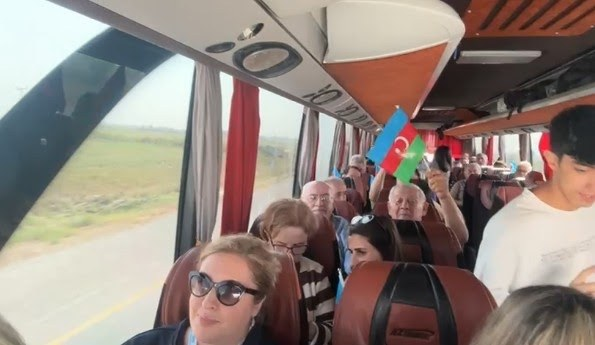
Bizim Xankəndi və Şuşaya yolumuz Bərdə və Ağdam şəhərlərindən keçirdi. Daha doğrusu, bir vaxtlar Ağdam şəhərinin olduğu, sonralar əsrdən əsrə soyqrım hayqıranların yer üzündən sildikləri ərazilərdən keçirdik. Halbuki, onların öz evlərinə heç bir zərər dəyməyib, hətta pəncərələrinin şüşələrində, evlərinin divarlarında bir çata da rast gəlmək olmur.
Yaşadıqları məskəni öz xoşuna tərk etmiş sakinlərin evləri bir il keçməsinə baxmayaraq, indi də səliqəli və toxunulmaz görünür.
Mənim yol yoldaşım Akif Kadıroviç Alaferdov idi. Onun fərəhdən gözləri parıldayırdı, üzündə xeyirxah təbəssüm var idi. O, əlindəki bayrağı avtobusdakıların oxuduqları mahnının ahənginə uyğun olaraq yellədirdi. Azərbaycanın paytaxtından Xankədiyə və Vətənimizin mədəniyyət paytaxtı Şuşaya çoxsaatlıq səyahətə baxmayaraq, xaricdə yaşayan azərbaycanlı alimlərin iki gün öncə keçirilmiş Birinci Forumunun iştirakçılarının xoş əhval-ruhuyyəsi var idi.
Mən yol yoldaşım haqda bir neçə xoş söz demək istəyirəm. Akif müəllim Sovet hakimiyyəti tərəfindən öz doğma Azərbaycanından minlərlə kilometr uzaqda yerləşən Qırğızıstana məcburi köçürülmuş azərbaycanlı ailəsində anadan olub. Amma, bizim məcburi köçkün düşmüş həmyerlilərimiz hiddətlənmək əvəzinə, halal zəhmətləri ilə yaşadılar, uşaqlarını böyüklərə hörmət, öz xalqına və onlara yeni məkanda kömək göstərən, çörək və yerlə təmin edən xalqa hörmət və ehtiram ruhunda tərbiyə etdilər.
İllər keçdi. İndi Akif Kadıroviç Alaferdov ölkəsinin hüdudlarından kənarda da tanınmış, minlərlə xəstələri sağaltmış travmatoloqdur. Çox sayda ixtisaslı mütəxəssislər yetişdirmişdir.
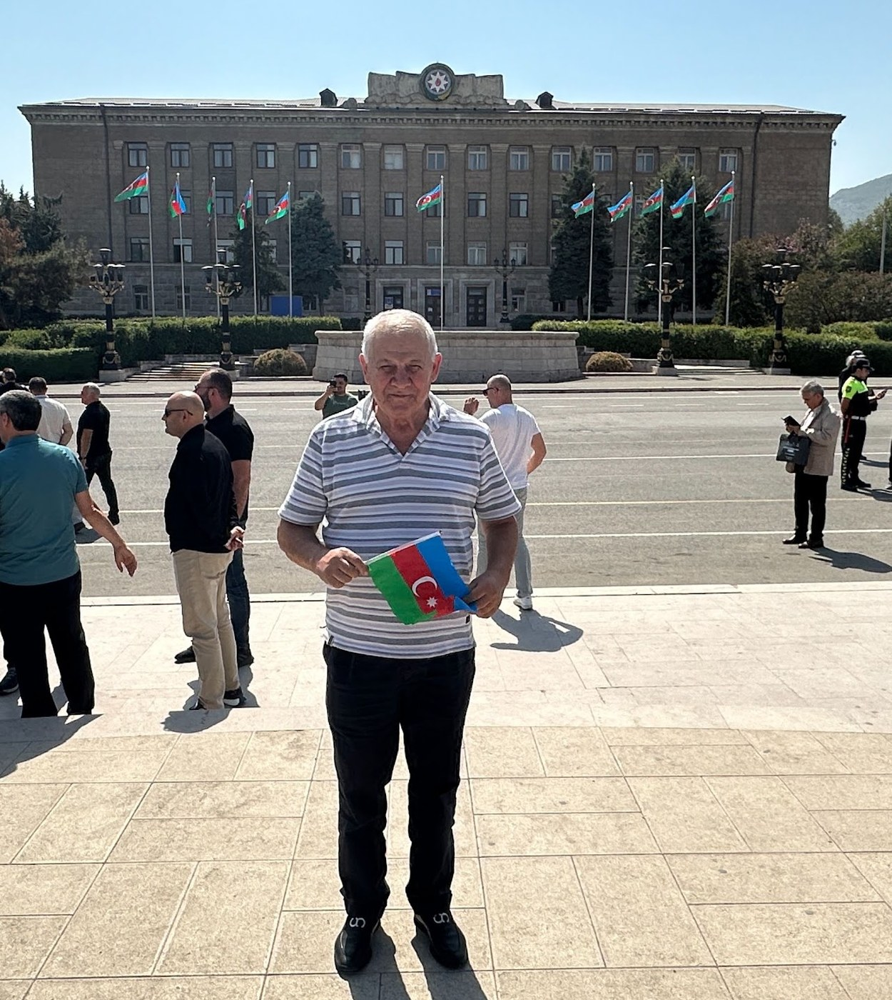
O, Qırğızıstan Respublikasının əməkdar həkimi, tibb elmlər namizədidir. Bir çox monoqrafiyaların, metodik tövsiyələrin, elmi məqalələrin müəllifidir. Alaferdov yalnız öz ixtisası sahəsində nailiyyətlərlə kifayatlənməyərək, həm də geniş ictimai fəallığı ilə fərqlənir. O, hazırda "Qırğızıstan-Azərbaycan" dostluq və əməkdaşlıq cəmiyyətinin prezidenti, Qığızıstanda yaşayan azərbaycanlıların "Azəri" ictimai birliyinin fəxri prezidentidir. Bizim səyahətimizin bəzi anlarında mənə elə gəlirdi ki, Akif müəllimin geniş, aydın təbəssümü möhtərəm yaşına baxmayaraq, bütün azərbaycanlılara əziz olan Qarabağın yollarına nur səpirdi. O, uşaq təbəssümü ilə elə gülümsəyirdi ki, sanki yaşı səkkizinci onilliyə keçən o deyildi.
Avtobusun ara keçidində rəqs edən qızlar, bizə rəhbərlik edən, Bakıya Avropanın mərkəzindən gəlmiş professor Masud müəllimin oxuduğu mahnı, avtobusu salanundakı yoldaşlarımızın əllərindəki bayraqlar bizim səyahətimiz zamanı təkrarolunmaz könül xoşluğu, ruh yüksəkliyi atmosferi yaradırdı. Biz isə Akif müəllimlə birlikdə hamı ilə bizim gəncliyimizin mahnılarına səs verirdik.
Bizim qəlbimiz Xankəndi və Şuşa üçün çırpınır. Bəli biz dünyanın başqa-başqa ölkələrində yaşayırıq, yaradırıq, amma biz yenə də birgəyik. Biz öz Vətənimizi yalnız dünən və bu gün deyil, həmişə sevirik! Məhz, bu sevgi bizi birləşdirir.
Rus dilindən tərcümə: Əlviz Əliyev

Xədicə Zeynalova, Ay Laçın (video)
Ayrı-ayrı sözlərin və səslərin asanlıqla qovuşub, birgə əks-sədaya çevrildiyi, titrəyən sinir sisteminə bənzər qapalı məkan olan geniş zalda, səhnədən kənarda təvəzökarlıqla, amma qürurla öz təntənəli saatını gözləyən, qanadlarını sanki gülümsəyərək açmış poyal sakitcə durmuşdu.
Xaricdə yaşayan azərbaycanlıların Ümumdünya Forumunun bir iclası yenicə başa çatmış, başqası isə ləngiyirdi və hələ başlamamışdı. Gözlənilmədən biri-biri ilə söhbət edən iştirakçıların izdihami arasından qara saçlı, xrizopraz rəngli paltarda, zərif, şux qamətli bir qadın inamla sözün hər mənasında eleqantlı görünən royalın qarşısındakı qısa, yumşaq oturacağa əyləşdi və royalın klavişlərini sanki zərif barmaqları ilə öpürmüş kimi dilə gətirdi və musiqi yarandı.
Zaldakı adamların çoxunun qəlblərini fəth edən, hamıya uşaqlıqdan tanış olan və bu səbəbdən də sevilən, ürəkləri gizildədən "Ay Laçın" melodiyası səsləndi. Laçın Azərbaycanın 1992-ci ildə işğalçılar tərəfindən qarət olunmuş və yandırılmış, sonradan azad olunmuş, 2022-ci ildən, 30 il keçdikdən sonra yenidən bərpa olunan şəhəridir.Royal arxasında çıxış edən qadını tezliklə fotomüxbirlər və opetatorlar əhatə etdilər. Onlar onu hər mövqedən çəkməyə başladılar. O isə davam edirdi, sanki ətrafda heç kim yox idi. Bir o, bir də royaldan başqa...
Onun adı Xədicə Zeynalovadır. O, bütün dünyada tanınmış bəstəkardır. Almaniyada yaşayıb, yaradır. O, Forumda Azərbaycanın milli qürur mənbəyi, Azərbaycan xalqının sərvəti kimi xüsusi dəvətnamə ilə iştirak edirdi.
Rus dilindən tərcümə: Əlviz Əliyev
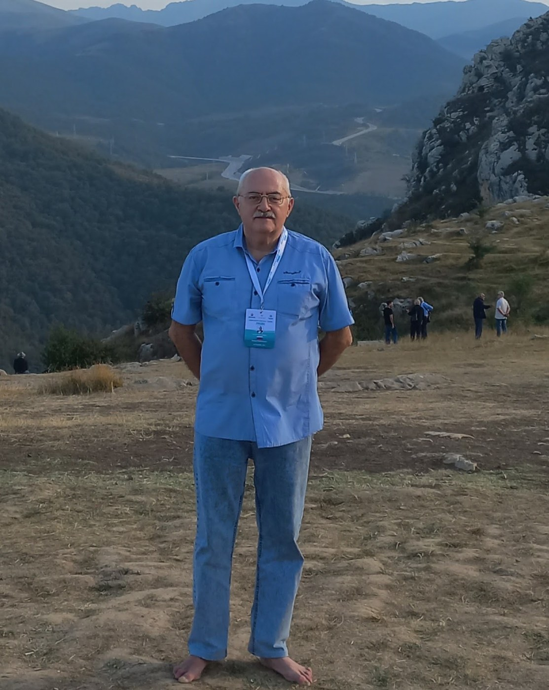
"Bura Cıdır düzüdür. Hər birimiz üçün əziz, doğma Cıdır düzü. Şuşanı Cıdır düzüsüz təsəvvür etmək mümkün deyil, Azərbaycanı isə Şuşasız təsəvvür etmək mümkün deyil. Biz Şuşaya qayıtmışıq, Cıdır düzünə qayıtmışıq və tarixi yerdə bundan sonra muğam səsi eşidiləcək, Azərbaycan mahnıları ifa olunacaq, böyük tədbirlər keçiriləcək, toy-bayram olacaq..."
İlham Əliyev
Xankəndindən gedən yol sıx kolluqlarla örtülmüş qayaların arası ilə ilanvari, qıvrıla-qıvrila, dolanbac yolla bizim avtobusu daha yuxarılara, dağın başına qaldırırdı. Hər döngə bizi Şuşa ilə görüşmək məqamına daha da yaxınlaşdırırdı. Beləliklə, Xankəndi binalarının damları lap aşağıda qalmışdı. Bizim səyahət avtobuslarımız isə aramla, dayanmadan hərəkətdə idilər. Xaricdə yaşayan azərbaycanlı alimlərin Forumunun iştirakçılarından bəziləri səbrsizliklə, bəziləri nəzərəçarpan həyacanla, bəziləri isə maraqla avtobusun pəncərələrindən yolu müşahidə edirdilər. Bütün bunlara baxmayaraq, bizim çoxumuz üçün Şuşa qarşımıza qəflətən çıxdı. Avtobuslar həmin anda dayandılar və biz hamımız bizim üçün nahar hazırlanmış mehmanxananın yanında avtobuslardan çıxdıq. Burada bizi yalnız nahar deyil, həm Qarabağ universitetinin rektoru Şahin Bayramovla və onun rəhbərlik etdiyi ali məktəbin əməkdaşları ilə görüş gözləyirdi. Remtor bizə universitetin perspektivləri haqqında, qarabağlı gənclərin gələcəyə həvəslə can atmasından, ümidlərdən, layihələrdən əminliklə, gələcək uğurlara inamla danışdı. Əminliklə demək olar ki, xaricdə yaşayan azərbaycanlı alimlərin dəstəyi Qarabağ universitetinin tələbələrinə bilik və bacarıqlarını artırmaqda öz töhfəsini verəcək. Buna heç kimin şübhəsi ola bilməz.
Biz rektora maraqlı sohbətə görə minnətdarlıq edib, nəhayət şəhərə tərəf üz tutduq. "Musiqiçilər və şairlər Tanrıya hamıdan yaxındırlar",- deyə dahi Sibir yazıçısı-cəbhədə olmuş Viktor Petroviç Astafyev tez-tez təkrarlayardı. Mən onunla uzun illər idi ki, tanış idim və çoxlu görüşlərimiz olmuşdu. O, yalnız "Çar-balıq" və "Vasyutkin gölü" əsərlərinin deyil, həm də müharibə dəhşətlərini özündə əks etdirən "Lənətlənmiş və öldürülmüşlər" romanının müəllifidir.
Budur, mən üç bərpa olunmuş nadir abidələrin- insanlara həyatlarının son anlarına qədər bütün canlılara qarşı məhəbbət tərənnüm etmiş bəstəkar Üzeyir Hacıbəylinin, şairə Nətavanın və müğənni Bülbülün abidələri yanında durmuşam. Bu doğma torpaqda, doğma şəhərdə onlar doğulub, boya-başa çatmışlar. İndi bərpa olunmuş bu abidələr vəhşicəsinə güllələnmiş, bərbad hala salşnmış və metal qəbulu məntəqəsinə verilmişdi. Nədən belə oldu? Yalnız bir şeyi bilirəm- musiqiçilərə, şairlərə ucaldılmış abidələri dağıdanların özlərini insan adlandırmaq hüququ yoxdur...
Mən Nətavanın və Hacıbəylinin evlərinin dağıntılarını gördüm. O evlərə mərmi düşməmişdi. Onları oğrular dağıtmışdı. Mən onlara millət deyə bilmərəm. Şairlərin, musiqiçilərin abidələrini güllələyənlərin, qapı, pəncərə çərçivələrini, qab-qacağı, ayaqyolu çanaqlarını oğurlayanların milliyyəti olmur və ola da bilməz.
Mən bulaqda üzümü yuyub, Şişanın qala qapısına tərəf yollandım. Mənim həmkarlarımın çoxu artıq oradan keçib, qədim qala divarlarının o biri tərəfində fərəhlə fotosessiya həyata keçirirdilər. Mən isə öz diabetdən əziyyət çəkən ayaqlarımla onlardan çox geridə qalmışdım. Digər tərəfdən, qapının önündə yerin səthi o qədər nahamar və daşlı-kəsəkli idi ki, mənim piyada hərəkətimin sürəti demək olar ki, sıfra düşdü. Eyni vaxtda həm ayaqlarımı hərəkət etdirmək, həm də müvazinətimi nahamar daşlıq yerdə saxlamaq çox çətin idi. Gözlənilmədən kiminsə nəvazişli və inamlı əli məni dirsəyimdən tutub, dəstəkləməyə başladı. Mən bu gənc qadının kim və nəçi olduğunu bilmirdim, amma o məni gözlənilməz xatalardan, bəlkə də illərlə yüz minlərlə insanların tapdayıb, hamarladığı daşların üstünə yıxılmaqdan xilas etdi.
Onun köməyi təmənnasız, mənə qarşı rəhmindən irəli gəlirdi. Biz onunla doğma Azərbaycan dilində danışırdıq. Mən Gülxanım (o özünü belə təqdim etdi) xanıma öz həyatımın, həm də Şuşaya gəlməyimin məcazi mənasını, bunun yalnız bir səyahət olmadığını açıqladım.
20-ci ilin noyabrında bizim ordu Şuşaya həmlə edəndə mən Sibirdə polisin caynağına keçmişdim. Mənim üstümdə şəklim, adım, familiyam, doğulduğum tarix olan təqaüd vəsiqəsi var idi, amma pasport üstümdə deyildi. Serjant məni tutub polis məntəqəsinə sürüklədi.

Onun familiyasının Çonayan olduğunu mən sonralar polis protokolundan öyrəndim. Mənə üzun müddət ayaq üstə durmaq və ayaqqabıda qalmaq olmazdı. Buna baxmayaraq, Çonoyan və həmkarları guya mənim şəxsiyyətimi məlumat bazasında yoxlamaq bəhanəsi ilə bir neçə saat yoxlama apardılar. Onlar mənə özümü rus kimi qələmə verməyə işarə edirdilər. Yəni onda onlar məni azad etməyə söz verirdilər. Mən isə azərbaycanlı olduğumu inadkarlıqla təkrar edirdim... Başa düşürsünüz, mən nəyin naminə öz ata, anamdan imtina etməliyəm?! Mən türkəm və türk olaraq da qalacam. Hətta məni şikəst etsələr də...
Budur, mən bir il bundan əvvəl bizim Vətənimizin tarixi haqqında mənzum "Xarıbülbül" dastanını yazan, indi həyatımda ilk dəfə Şuşadayam.
Şuşanın cənub hissəsində "Cıdır düzü" deyilən düzənlik var. Qarabağ xanlığı dövründə burda ildə iki dəfə yüzillərlə ənənəvi olaraq qarabağ cinsindən olan atların yarışı keçirilib. Burada həm də xalq ənənəvi olaraq bahar bayramı Novruzu və başqa bayramları qeyd edirdilər. Burada həm də indiki atla-polo oyununun əcdadı sayılan atla idman növü "Çövkən" keçirilirdi.
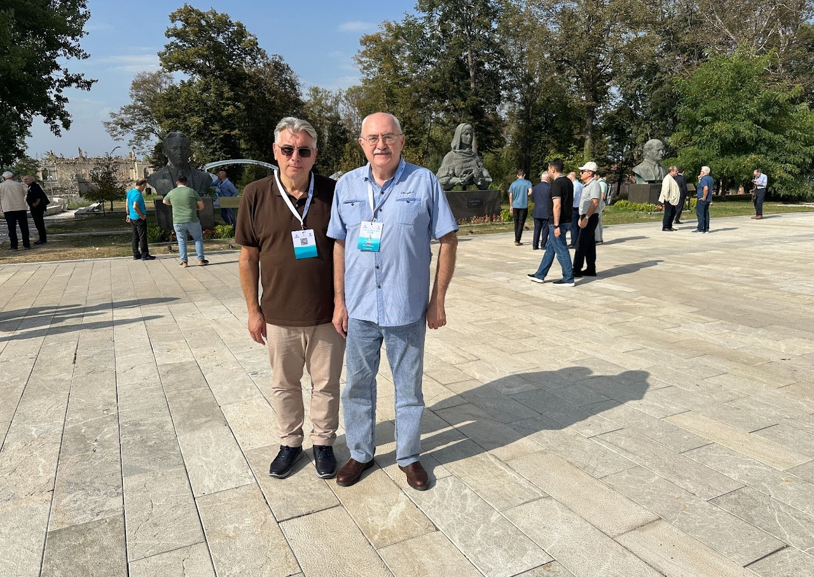
Geniş dağ yaylası on doqquzuncu və iyirminci əsrlərdə plenar əsərlər yaradan rəssamlar üçün öz əsərlərini emalatxanada deyil, açıq təbiətdə, təbii işıqlı havada yaratmaq üçün sevimli məkana çevrilmişdi. Cidır düzündən görünən dağ mənzərələri doğrudan da təkrarolunmazdır. Burada həm musiqi həm də ədəbi-bədii festivallar, yarmarkalar, bayramlar keçirilirdi. Burada 1989-cu ildən 1991-ci ilə qədər, sonradan 2021-ci ildən Şuşa azad olduqdan sonra yenidən həyata keçirilməyə başlayan "Xarıbülbül" festivalı keçirilir.
Mən hörmətli Gülxanıma o, məni qolumdan tutub avtobusa qədər müşayyət edən zaman indiyə kimi heç kimə açmadığım gizli və gülməli görünən arzum haqda danışdım. Bu arzu Cıdır düzü yaylasına qalxıb, orada otların üstündə ayaqyalın getmək idi. Bəlkə də bundan sonra ayaqlarım bir daha bu sonuncu dörd ildə ağrıdıqları kimi ağrımayacaqlar. Əlbəttə belə düşünmək sadəlövhlükdür, amma siz harda möcüzəyə inanmayan şair görmüsünüz? Gülxanım məni avtobusa qədər müşayyət edib, arzumun çin olmasını arzuladı. Tezliklə avtobus yola düşdü. Amma bununla mənim çətinliklərim bitmədi. Avtobus Cıdır düzünə çatmamış sürücü dedi ki, bizim nəqliyyar vasitəmiz üçün yol çox yoxuşdur və biz bundan sonra piyada getməli olacağıq. Gedim, ya getməyim? Əgər söhbət arzumun yerinə yetirilməsindən gedirsə, onda getməmək nə deməkdir?! Mən getdim. Yol mənim üçün o anda həqiqətən çox yoxuş idi. Mən yenə də hamıdan arxada ayaqlarımı sürüyürdüm. Hətta bir-iki addım qalxmaq üçün mən tez-tez dayanmalı, ensiz səkinin hündür olmayan divarlarına soykənməli olurdum. Mən artıq başqa səyahətçiləri izləmirdim və yalnız ayaqlarımın altına diqqətlə baxırdım.
Tər gözlərimə tökülürdü, köksümdə hava çatışmırdı. Birdən mənə sonsuz görünən yoxuşun mənim hərəkət istiqamətimdən sol tərəfində kiçik bir düzənlik sahəyə rast gəldim. Mən bu nisbətən düzənlik sahəyə döndüm. Aralıda üzərinə "Vaqif" yazılmış memarlıq abidəsi ucalırdı. Mən anladım ki, bu şair Vaqifin yaxınlarda bərpa olunmuş məqbərəsinin xiyabanıdır. Molla Pənah Vaqif Qarabağ xanlığının birinci vəziri, 18-ci əsrdə Azərbaycanın tanınmış siyasi xadimi, ən əsası isə Azərbaycanın görkəmli, xalq tərəfindən sevilən şairlərindən biri idi. Xiyaban mənə nəfəsimi dərməyə imkan verdi. Amma, mən həmin yolu Cıdır düzü yaylasına qədər davam etməli idim, yoxsa mən yuxarı qalxana qədər digərləri avtobusların yanına dönərdilər. Bu fikir məni irəliləməyə sövq etdi və mən yenidən yuxarı qalxmağa başladım. Bu mənim üçün son illərdə keçdiyim ən ağır metrlər idi. Vaxt var idi mən asanlıqla qayalara dırmaşar, Tayqanın cəngəlliklərindən keçər, Tundranın bataqlıqlarından da asanlıqla keçərdim. Keçirdiyim insult və ürəyimə qoyulan üç şunt əfsuslar olsun ki, keçmiş ekspedisiya "igidliklərini" təkrarlamağa imkan vermirlər. Axır ki, mənim səylərim öz bəhrəsini verdi və səxavətini göstərdi. Mənim gözlərim önündə Cıdır düzü yaylası açılan kimi... mən qarşımda əvvəlki xilaskarım Gülxanımı gördüm. Biz buradan yenə də qol-qola getdik. Sən demə o buraya Land Rover sürücüsü, naməlum bir kişi ilə gəlib. Ondan mənə yaylaya qalxmağa kömək etməsini xahiş etdi. Görünür onlar mən tısbağa sürəti ilə hərəkət edincə, məndən əvvəl buraya çatmışdılar.
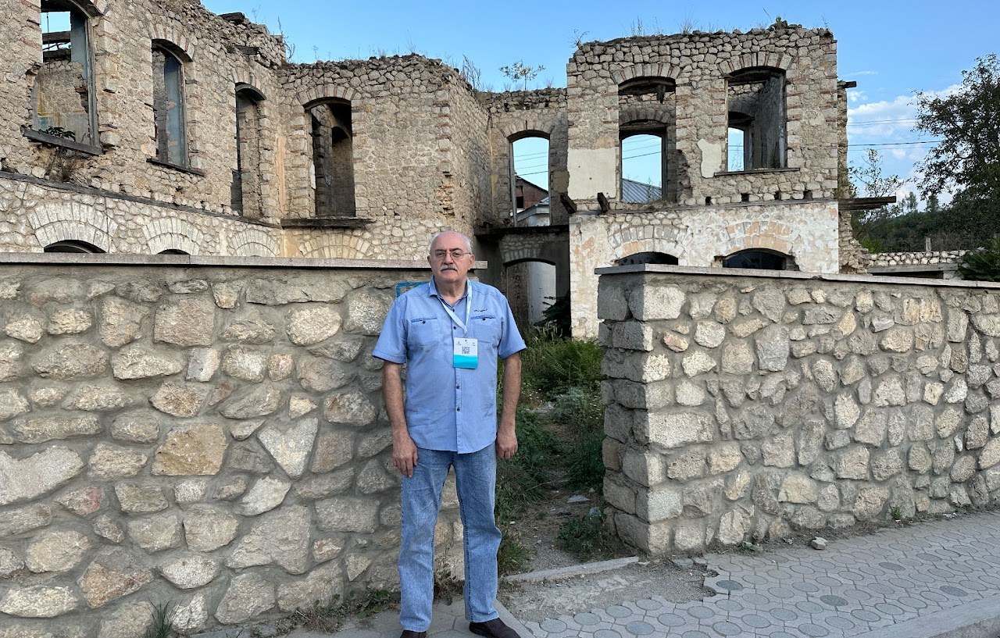
Biz otlaq sahəyə çıxdıq. Mən ayaqqabımı və corablarımı çıxarıb, ayaqyalın Cıdır düzü ilə getməyə başladım. Ayağımın birində üçüncü barmağı hələ 20-ci ildə amputasiya etmişdilər. Mən birinci dəfə idi ki, əvvəllər heç vaxt görmədiyim, amma azad olunması uğrunda hətta özümdən asılı olmadan belə az da olsa öz qanımı tökdüyüm torpağa qədəm qoyurdum.
Mən indi Cıdır düzü ilə gülümsəyərək gedirdim. Mən özümü xoşbəxt sanıram və heç nəyə təəssüflənmirəm. Mən o vaxtlar bütün dünyaya səs salan "Şuşa, sən azadsan!" sözlərini xatırlayıram. Bu sözlər hələ də mənim qəlbimdə səslənir.
Gülxanım məni tək buraxıb, mənim üçün gözoxşayan təbii gözəllikləri, Cıdır düzünə qalxan yoxuşları vidioya çəkməyə başladı. Bəlkə də biz Gülxanımla birdə görüşməyəcəyik, amma mənim üçün bundan sonra Şuşa Gülxanımı xatırladacaq, Azərbaycan mənim üçün alim qardaşlarım Məsud əfəndini, Bəxtiyar bəyi, Emil müəllimi, Akif müəllimi və xalqımın başqa-başqa nümayəndələrini xatırladacaq. Bu mənim doğma, xeyirxah, qurucu, yaradıcı, sevməyi və bağışlamağı bacaran xalqımdır!...
Rus dilindən tərcümə: Əlviz Əliyev

Hər bir görüş nə qədər ürəkaçan, üzun və ya qısamüddətli olmasından asılı olmayaraq axırda vidalaşma ilə nəticələnir. Yaradana şükürlər olsun! Ola bilsin ki, müvəqqəti vidalaşsınlar, ola bilsin ki, vidalaşma təxirə salınsın. Bizim görüş də məhz, belə alındı. Belə ki, biz-xaricdə yaşayan alimlərin Birinci Forumunun iştirakçıları səhər tezdən birlikdə Qarabağa getməyə toplaşdıq. Bizim qonaqpərvər "Gülüstan" sarayının zalında keçirilən müzakirələrimiz vida şam yeməyi və kosertlə başa çatdı.
Təbii ki, biz böyük dəyirmi masa arxasında yalnız hansı qədim və ya müasır Azərbaycan mətbəxinin ləziz yeməyinə üstünlük vermək üçün deyil, həm də ilk növbədə vaxt və elmi müzakirələr çərçivəsi ilə məhdud olmayan şəraitdə Yer kürəsində yaşayan insanların bəzən daha çox ehtiyac duyduğu ünsiyyət üçün toplaşmışdıq.
Zaman keçdikcə biz, bizi tərk edib, geriyə yol olmayan dünyaya köçmüş kimisə xatırlayarkən sonradan təəssüflənirik ki, bəlkə köçənlərə Allah bilir, yalnız bir xoş nəzər və ya xoş söz çatışmadı ki, bizimlə bir müddət də qala bilsin.
Bizim vida qonaqlığı da çox ehtimal ki, bu həmrəyliyi yaratmaq, taleləri, tarixləri, doğulub, böyüdükləri torpaqları, Vətənə olan sevgiləri bir olan insanların birgə cəmiyyətini yaratmaq məqsədi güdürdü.
Hündür olmayan səhnəyə vida qonaqlığına toplaşanların qarşısına Azərbaycan milli musiqi alətləri-tar, kamança, qaval və nəfəs alətləri ilə musiqiçilər çıxdılar. Qabaqda ayrıca gözəl bir qadın əyləşmişdi. O, Azərbaycan Dövlət Filarmoniyasının, və Beynəlxalq Muğam mərkəzinin colisti Rəvanə Qurbanova idi. Onu həyat yoldaşı, peşəkar musiqi ifaçısı, "Buta" ansamblının rəhbəri Rövşən Qurbanov müşaiyyət edirdi.
İfaçı öz çıxışını muğamla başladı. Mənim aləmimdə muğam bizim xalqın keçmişindən bu gününə gələn, qızıl simlərlə bağlanmış, insan varlığı qarşısıda dünyanın möhtəşəmliyini, kainatın ahəngini özündə cəmləşdirən səsidir. Çoxlu, bir-birindən fərqli insanların toplaşdığı zalda bir anlığa sükut çökdü.Geniş zala susmaq bilməyən dağ bulaqlarının səsinə bənzər, hər bir dinləyicinin qəlbini həyacanlandıran xanəndə (Bizim ölkədə mahir muğam ifaçılarını belə adlandırırlar) Rəvanənin səsi və musiqi sədaları yayıldı.

Sonradan rəqs havaları və başqa müasir mahnılar səsləndi. Amma, muğam ifasından yaranan ilk hisslər sona qədər dinləyiciləri tərk etmədi. Xaricdə yaşayan alimlərin Birinci Forumunun iştirakçılarından çoxu minnətdarlıq nitqi söylədilər.
Təntənəli axşam, görünür təşkilatçıların da planlaşdırdığı kimi başa çatmaq üzrə olanda, aydın olanda ki, bir neçə andan sonra bayram başa çatacaq, bütün azərbaycanlı alimlər ruh yüksəkliyi ilə qalxaraq əl-ələ verib böyük çevrə yaratdılar və qədim Azərbaycan rəqsi sayılan "Yallı" rəqsini oynamağa başladılar. Bu rəqs Qobustanın daşlarında həkk olunmuş rəsmlərdə öz əksini tapır. O yerlərdən bir vaxtlar on ikinci Roma leqionu keçmək istəmiş, amma keçə bilməmiş, yerli əhaliyə qarışıb, qohumlaşaraq orda qalmışdılar. Bu haqda xatirə olaraq yalnız Abşeronun Ramanı kəndinin adı qalmışdır (romalı kimi tərcümə olunur). Bakı şəhərinin gerbində isə öküz başı həkk olunmuşdur. Öküz başı məhz, Yuli Sezar tərəfindən yaradılmış və "İldırımsürətli" adlandırılan on ikinci leqionun rəmzi simvolu idi.
Biz musiqiçiləri getməyə qoymurduq. Onlar bizim rəqsimiz bitənə qədər ifa etdilər. Yeri gəlmişkən, Qobustan qayalarındakı şəkillərdə məhz, bu rəqsin təsvir olunduğunu görkəmli alim, bir neçə dəfə Azərbaycana səyahət etmiş Tur Xeyerdal sübut etmişdir. Zənn edirəm ki, bu haqda bizimkilərin də təsəvvürləri var idi. Ən nəhayət, Forum iştirakçılarının nur yağan üzlərinə, onlarda ruh yüksəkliyinə diqqət yetirən yəqin ki, təkcə mən deyildim. Mən əlbətdə, başa düşürəm ki, bu nür öz mənbəyini haradan alır. Yəqin ki, bu sizə də aydındır.
Rus dilindən tərcümə: Əlviz Əliyev
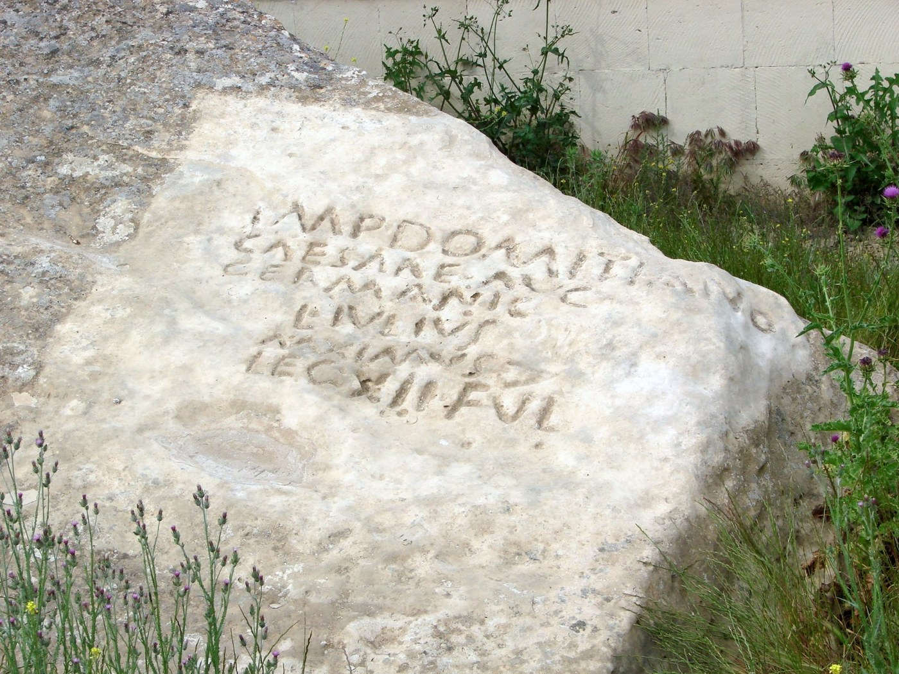

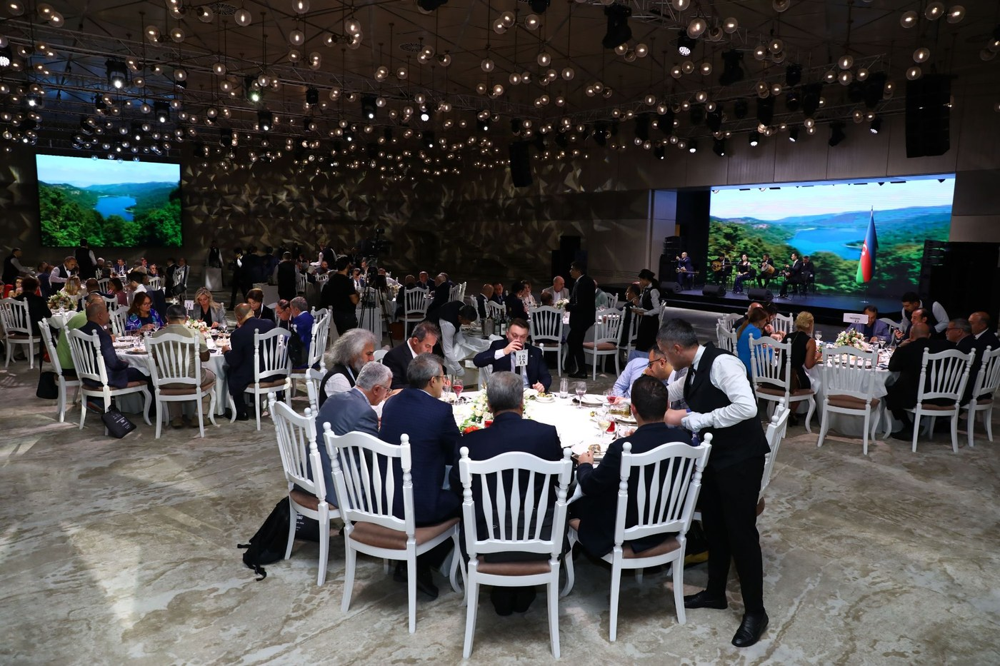

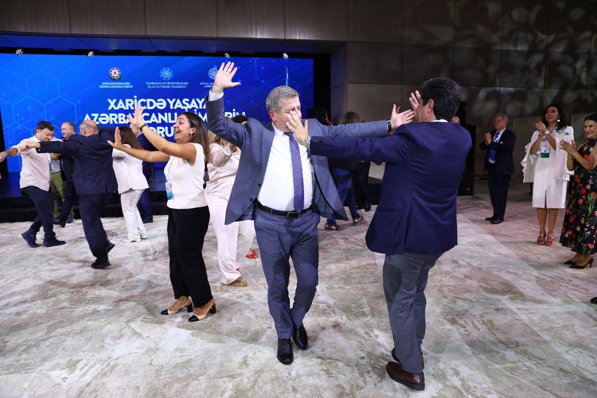
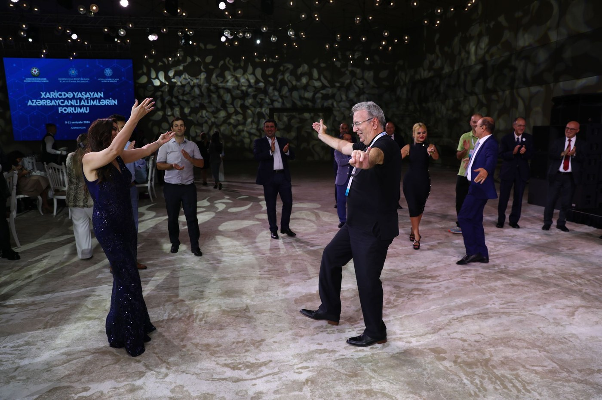

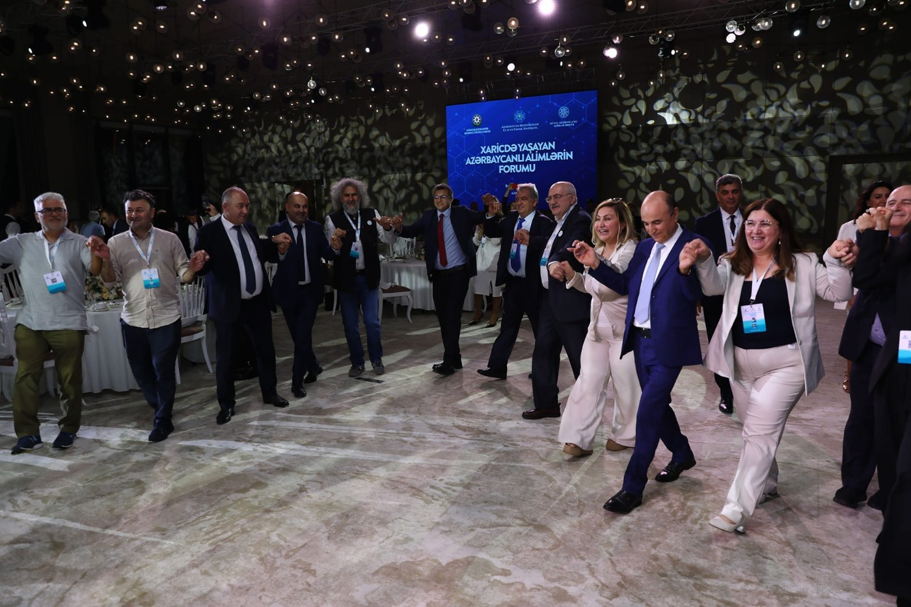


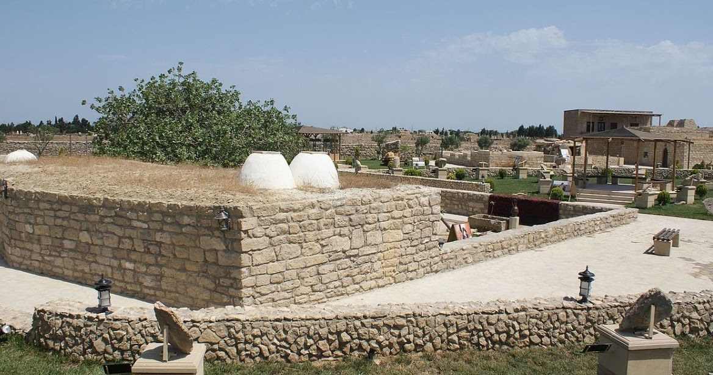
Səs-küylü dəniz sularının əhatəsində, günəş şüalarının və küləyin təsiri altında qalmış, daşlı və tozlu yarımadada Qala adlanan qədim bir məskən mövcuddur. Vaxtı ilə orada zaman keçdikcə kütləşmiş, bərkiyərək daşlaşmış balıqqulağından tikilmiş evlərdə insanlar yaşayırmış. Onların evlərinin pəncərəsi yox imiş. İşıq içəri "dubla" deyilən qoşa tüstü bacalarından düşərmiş. İndi isə burada açıq səma altında myzey yaradılıb. Evlərin arasıyla, daş cığırlarla burada qızmar günəş şüaları başlarına döyə-döyə hər şeyə həvəs və maraq göstərən turistlər gəzir, nadinc uşaqlar qaçışırlar.
Daş həyətlərdən birində tənha, canlı fısdıq ağacı durur. Onun gövdəsi kələkötür, qabığı açıq boz rəngdədir. Kökləri isə yerin dərinliklərinə işləmişdir.
...Fısdığın barı haqda hələ İncildə də xatırlanır. Yazılanlara görə çaritsa Savskaya fısdıq tumlarını çox sevərmiş. Amma, məsələ bunda deyil. Ağacın yaşı bəlkə də neçə yüz il olar. Ağacın gövdəsinin qeyri-adi hamarlığına fikir verdim. Sanki nə iləsə cilalanmışdı. Bu saysız, hesabsız insan əli toxunması nəticəsində belə olur. Sən demə, Qalada belə bir inam mövcuddur: Kim bu ağacın gövdəsinə toxunub, ürəyində hansısa arzu tutarsa, bu arzu mütləq çin olar. Toxundum. Gözlərimi yumdum. İstədiyimi ürəyimdə tutdum... Çin oldu ya olmadı yadımda deyil. Amma, indi mən dəqiq bilirəm ki, xoşbəxtlik gətirən ağac harda bitir və onun adı necədir.
Rus dilindən tərcümə: Əlviz Əliyev
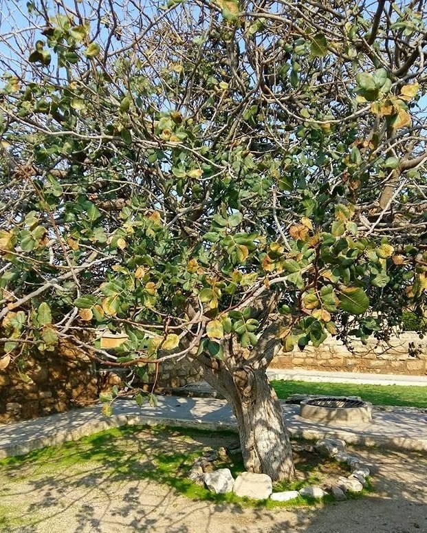
Bir gün şeirlərim məni qul olmaqdan xilas etdi. Bəlkə də «o gün şeirlərim həyatımı xilas etdi», desəm daha haqlı olaram.
Bu hadisə lap çoxdan Pamir dağlarının ətəyində, Tacikistanda baş verib. Burada vətəndaş müharibəsi təzəcə sovuşmuşdu.
Mən Pənc çayını keçib Əfqanıstana qaçaqmal aparan müccəhidlərin əlinə düşdüm. Onlar məni tutduqlarına çox sevindilər. Tərcüməcilərinin dediyinə görə, onlar məni palaza büküb Pənc cayındaki Moskva sərhəddindən keçirib Kandaqarda qul kimi baha qiymətə satmaq fikrində idirlər.
Əlacsiz qalmışdım. Nə edə bilərdim? Heç nə! Çarəsizlikdən başladım şeirlərimi oxumağa. Təbii ki, rus dilində. Tərcüməçidən başqa heç kim bir kəlmə də anlamırdı. Ancaq, gördülər ki, bu adi danışıq dili deyil.
Tərcüməçi məndən bu şeirlərin kimə məxsuz olduğunu soruşdu. Mən dedim ki, bu mənim şeirlərimdir.
Qəfildən, hər şey dəyişdi. Məni nəinki buraxdılar, hətta qarşımda iri bir dəstərxan açdılar. Plov, çay və başqa şərq ləzizləri gətirdilər.Sonra məni hörmətlə əvvəl olduğum yerə ötürdülər. Çox uzun müddət bu insanların fikrinin qəfil dəyişməsinin səbəbini anlaya bilmirdim.
Sonralar Lermontovun həyat və yaradıcılığını öyrənərkən onun Qafqazda başına gəlmiş oxşar bir hadisəylə rastlaşdım.
Deyirlər ki, dağlarda əfsanələrin ömrü uzun olur. İnsanların ömründən daha uzun. Çoxları bilir ki, Lermontovu Qafqaza onun Puşkinin ölümü haqda həqiqət dolu ürək ağrıdan misralarına görə sürgün etmişdilər. Onu dağlara, müharibəyə yollamışdılar və əmin idilər ki, o sağ qayıtmayacaq. Lermontov bu göndərişin məqsədini özü də bilirdi. Lakin, Lermontov güllə qarşısında da əyilmədi və bir gün hansı sa düşmən əsgərinin gülləsindən öləcəyini bilərək, özünə və əqidəsinə sadiq qaldı.
Bəlkə ona görə onun yaradıcılığında döyüşlərdə qaçılmaz ölümə həsr olunmuş bir çox şeirlər var. Lermontov fatalist idi. O həmişə döyüşə getdikdə qırmızı köynək geyinib fatalist kimi ölümün qarşısına çıxırdı.Lakin, dağ döyüşçülərinə qarşılarındakı insanın kim olduğu məlum olur.
Şərqdə düşmənə qarşı amansız olurlar, lakin, şairlərə xüsusi hörmət edirlər. Onların səsində xalqın haqq səsi səsləndiyinə görə onlara xüsusi münasibət göstərilir.
Xüsusilə haqq yolunda əziyyətə məruz qalan şairlərə.
Lermontov döyüşlərin lap önünə atılırdı, lakin, bilmirdi ki, dəstələrinin başçıları döyüşçülərə belə bir əmr verirdilər.
«Baxın, o qırmızı köynəkli rus zabitini görürsünüz? Ona güllə atmayın. O şairdir!» Haram! – deyə bağırırdılar onlar. Və atıcılar qəsdən gülləni Lermontodan yan keçirdirdilər. Haram – «olmaz», «qadağandır», «Allah qarşısında günah» deməkdir. Dağ adamlarının təsəvvüründə Lermontov aşıq idi. Şərqdə səyyar şairlərə aşıq deyirlər. Heç bir döyüşdə, heç bir qarşıdurmada Mixail Yuriyevıçə bir güllə də dəymədi. Şərqdə şairləri hətta müharibədə belə öldürmürlər. Bu müdrik şərq adətidir.
Və görünür ki, bu adət bəzi Əfqan qəbilələrində indi də qüvvədədir. Şairə və dərvişə toxunan Allah cəzasına məhkumdur!
Məhz bu qayda məni müccəhidlərlə görüş zamanı xilas etdi. Şairlərə toxunmaq haramdır!
Yeri gəlmişkən, məhz bu sözü Müəmmər Qəddafi ona işkəncə verənlərə ölməzdən qabaq təkrar edirdi. Lakin, onu heç kim eşitmədi. Ya Liviyada zəmanə dəyişmişdi və keçmiş adətlər unudulmuşdu, ya da Qəddafini şair kimi qəbul etmədilər…
Ruscadan тərcümə: Təranə Məmməd
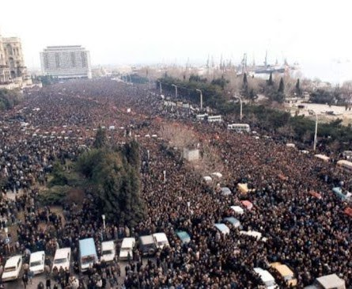
Ola bilsin ki, bəziləri üçün hər şey başqa cür görünürdü, yaxud tamam başqa cür görünə bilərdi. Amma, mənimçün məhz, belə idi. Hər kəs həqiqəti özü başa düşdüyü kimi anlayır, bu nöqteyi-nəzərin yeganə düzgün olduğunu düşünür. Onun bu hüququnu heç kim əlindən ala bilməz. Hər şey ola bilər. Biz hamımız fərqliyik... Amma, şəxsən mənə tanış olmayan bir qadının mənimlə feysbukda paylaşdığı anları heç cür unuda bilmirəm...
1990-cı ilin yanvar ayı. Bakı. 20 yanvara keçən gecə baş vermiş gülləbaran yenicə sakitləşib. Bu qadının qardaşı Mockvada imiş. O, nə qədər çalışsa da, bacısına zəng edə bilmədiyindən, çox narahatdır. Onun ala bildiyi məlumatlar isə həyəcanlı və ziddiyyətlidir. Nəhayət, o, bacısına zəng edə bilir, bacısından xahiş edir ki, küçəyə çıxmasın, çünki, bu təhlükəlidir, insanlar həlak olub, şəhərdə komendant saatı tətbiq olunub, hər tərəfdə əsgərlər, tanklar dayanıb. Ola bilsin ki, hardasa hələ də atəş davam edir... O , həyəcanlıdır. Onu başa düşmək olar. Necə olursa, olsun o-qardaşdır. Bu zərif qadından-bacısından eşitdiyi sözlər onu mat qoyur: "Biz belə məqamda evdə otura bilmərik! Biz bütün ailəliklə şəhidləri dəfn etməyə gedəcəyik!" Qardaşı ona yalvarır ki, belə etməsin: "Birdən səni öldürsələr necə olacaq?! Onda mən necə yaşayaram?!" O isə qardaşına deyir: "Mən kimdən artığam ki... Dünən şəhid olanlardan mənim nəyim artıqdır?!"
Qadın əynini geyib küçəyə çıxır və Meydana yollanır...
"Mən kimdən artığam ki..." Hər bakılının evində, ailəsində belə deyirdilər. Mən bakılıların mərdliyi qarşısında baş əyirəm!..
Meydana BÜTÜN ŞӘHӘR çıxdı!..
Rus dilindən tərcümə: Əlviz Əliyev

Hər kəsin öz adı, soyadı var. Mənim də hamı kimi öz adım, soyadım və atamın adı var. Amma, mən azərbaycanlı olduğumdan atamın adı (otçestvo -rus.) iki sözdən ibarətdir:- birinci atamın adı, ikinci-"oğlu", yəni rus dilinə tərcümə edəndə-"sın". Azərbaycan dilində "oviç" və ya "ovna" şəkilçiləri olmadığından rusca tərtib olunan sənədlərdə ya "oqlı" (sın), ya da "kızı" (doç) yazılır. Ilk baxışdan qeyri-adi bir şey yoxdur. Amma, nəzərə alaq ki, mən əsrin dörddə birindən çoxunu Rusiyada yaşayıram və burada bu hal hamı tərəfindən eyni tərzdə qarşılanmır. Iş yerində də cüzi də olsa, bəzi çətinliklərlə üzləşirdim. Hətta, arxamca "çurka" deyənlər də olmuşdu. Amma, üzbəüz deyə bilmirdilər. Utanırdılar .Çünki, rusca mən bəzilərindən yaxşı danışır, yaxşı yazır, həm də yaxşı anlayırdım. Elə ona görə də utanırdılar. Küçəyə çıxanda həmişə pasportu özümlə götürürəm. Әslində, Moskvadan başqa heç yerdə çətinliyim olmayıb. Paytaxtda da, göz dəyməsin, yola verə bilirdim. Bir neçə dəfə saxladılar, sənədlərimi yoxladılar. Amma, mənim "oviç" deyil, "oqlı" olduğuma görə baxışlarından şübhə hiss olunurdu..Bu isə bir narahatlıq hissi doğururdu. Sanki, mən nəsə bir pis iş görmüşəm və gizlətməyə çalışıram..
O vaxtlar çox həyacanlı, özbaşınalığın hökm sürdüyü doxsanıncı illər idi. Odur ki, bir dəfə mənim milliyətcə rus olan həyat yoldaşım belə məsləhət verdi:-"Sənin bu "oqlı" nəyinə lazımdır? Onsuz da sən Rusiyada yaşayırsan, rusca danışırsan, rusca düşünürsən. Get, pasportstola, atanın adını dəyişdir. Nə olar ki?.. Rüsumu ödəyərsən, rejissor Ryazanov kimi Aleksandroviç və yaxud Alekseyeviç olarsan. Nə fərqi var? Bizim uşaqları da məktəbdə yoldaşları lağa qoymazlar." Bir xeyli düşündüm. Atamın, anamın, bacılarımın şəkillərini saxladığım zərfi çıxartdım. Bu vaxt zərfin içindən şəkillərlə birgə doxsanıncı ilin yanvar ayında çıxmış köhnə "Bakı" qəzeti çıxdı.
Qəzetdə dəniz sahilində saysız-hesabsız insan dənizi ilə örtülmüş şəhər meydanı göstərilib...
Şəhərdə komendant saatı hökm sürür. Küçələrdə tanklar, bronetransportyorlar, pulemyotlar, minlərlə silahlı əsgərlər. Üç nəfərdən artıq bir yerə yığışmaq qadağandır. Amma, xalq meydana çıxdı. Xalq nə ölümdən, nə də həbslərdən qorxmadı. Bir vaxtlar şair Qaliç oxuyardı:
"Çıx meydana, sən çıxarsan,
Sən ki, bunu bacararsan.
Çatdı zaman, hamı hazır?!
Kvadratlarda alaylar,
Dayanıb əmrə müntəzir..."
Məhz, alaylar həqiqətən dayanıb əmri gözləyirdilər. Meydanın üstündə hərbi vertolyotlar dövrə vürurdular. Bütün bunlara baxmayaraq, sadə, silahsız insanlar-bakılılar və başqa bölgələrdən gələnlər bu meydana axışıb gəlirdilər. Onları heç kim dayandıra bilməzdi! Heç bir əsgər, heç bir pulemyot, heç bir tank. Onlar 20 yanvar gecəsi əsgərlər tərəfindən öldürülmüş övladlarını dəfn etməyə gəlirdilər. Şəkildə görünən uzunsov düzbucaqlar həlak olmuş şəhidlərin cənazələridir. Mən onların adlarını bilmirəm. Yüzlərlə öldürülmüş cavanlar, yaşlılar, yeniyetmələr, qızlar, uşaqlar, qocalar... Onların hər birinin adı var idi, soyadı var idi, atasının adı var idi.Onların atalarının adlarının nə olduğunu bilmirəm, amma, ondan sonra gələn sözü harda olsam unutmaram və unuda da bilmərəm.
Mən — oğluyam! Mən atamın və anamın oğluyam. Belə olub və belə də olacaq. Mənim yoluma kim çıxırsa çıxsın- nasistlər, skinxedlər, başıqırxıqlar, fərqi yoxdur. Mən Bakıda necə doğulmuşamsa, elə də qalacam!
Rus dilindən tərcümə: Əlviz Əliyev
Mən Bakını 11 iyunda tərk etdim. Amma Bakı mənimlə qaldı. Mən bütün xəyallarımla və qəlbimlə hələ də Fəvvarələr meydanında, Torqovıy küçəsində, köhnə şəhərin dalanlarında, şirvanşahlar sarayının yanında, bulvarda, şəhidlər xiyabanındayam...
Xəzərin dalğaları durmadan, xışıltı ilə mənim ayaqlarımı oxşayır. Nəvazişli xəzri mənim köynəyimi aramla tumarlayır. Sanki bağ evindəki qoca Foks açılmış yaşıl darvaza qarşısında fırlanaraq, zingildəyə-zingildəyə məni gözləyir. Mən hələ də o yerlərdəyəm...
Bu kitab səninlə vidalaşma kitabı deyil, mənim doğma Bakım, mənim əfsanəvi Zurbahanım, mənim Küləklər şəhərim, mavi səma gözlü payız Yaradanının şəhəri. Mən səninlə vidalaşmıram, Bəxtiyar, səninlə vidalaşmıram, Bəsti, siz mənim uşaqlıq qonşularım-böyük alim və böyük aktrisa! Mən səninlə vidalaşmıram baxca uşaqlarının şən səsi ilə dolu, bir az böyük uşaqların həvəslə yumşaq topu zeytun ağaclarının altında səs-küylə qovduğu Montin həyəti...
Suraxanıda Atəşgah məbədindən bir az aralı məzar daşları altında mənim kiçik bacım Nailə və mənim atam Əlixas müəllim uyuyurlar. Mən sizinlə vidalaşmıram, mənim əzizlərim. Mən harda olsam siz mənimləsiniz.
Mən sizinlə vidalaşmıram, mənim bu dünyadan köçmüş və sağ olan sabirabadlı, ulacalı, bakılı doğmalarım və dostlarım. Mən harda olsam siz mənim qəlbimdəsiniz- Bəybala və Nigar, Şövkət və Nizam, Əliməhəmməd və Nazim, Xeyrulla, Cəmilə və Bilal...
Mən vidalaşmıram.
Əlbəttə mən heç vaxt bacım Şəfiqədən və anam Saniyə xanımdan ayrıla bilmərəm. Siz mənim üçün mənim həyatımın nəfəsisiniz, siz mənim üçün yer üzündə olan ən dəyərli insanlarsınız.
Mən vidalaşmıram. Mən burdayam. Mən həmişə sizinləyəm...
Sizin Eldar
Rus dilindən tərcümə: Əlviz Əliyev

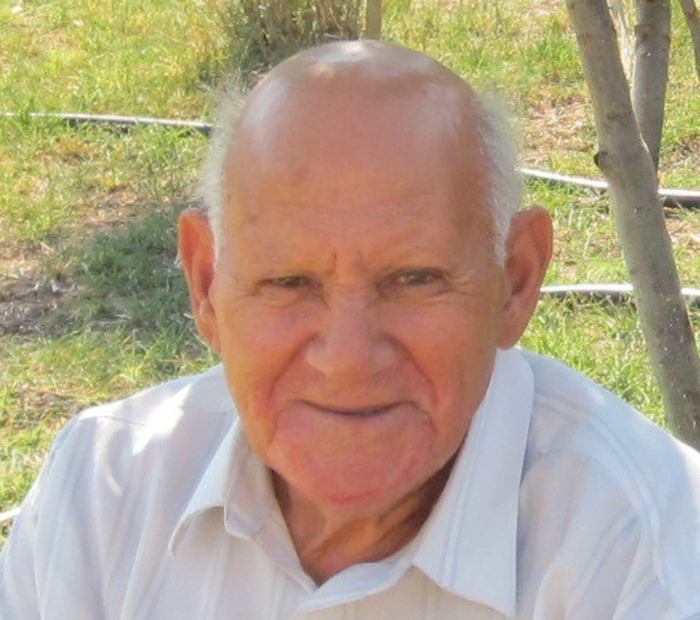

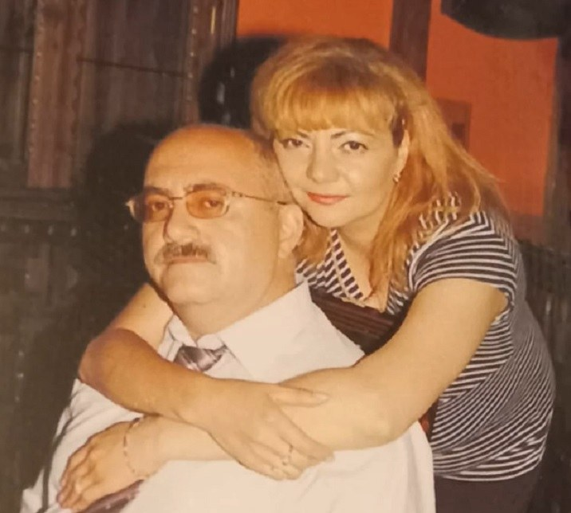
Dünyada ən dadlı xörək anamın dolmasıdır. Onu anam kimi və yaxud ondan yaxşı heç kim hazırlaya bilməz, çünki, bunun üçün anamın əlləri və ürəkdən gələn həvəsi lazımdır. Odur ki, hamının hətta, mənim də hazırlaya biləcəyim adi dolmaya keçək. Bunun üçün nələr lazımdır? Әvvəla təzə üzüm yarpağı. Anam mənə belə üzüm yarpaqlarını büküb, plastik butulkalara ağzına qədər doldurub, sonra kip bağlayıb göndərib. Onları açmaq üçün əvvəlcə yarpaqları qazana düzüb üstündən qəhvədandan qaynar su tökürəm. Belə onları açmaq asan olur. Әgər təzə üzüm yarpaqlarının mövsümü deyilsə, onda marinadda (yəni sirkəli turşuda) saxlanan yarpaqlardan istifadə etmək olar. Әgər sizin sizin şəhərdə bazar varsa, orada onlar mütləq olmalıdır.
Yaxşı olar ki, əti özün seçib, məti də özün hazırlayasan. Mənim buna nə səbrim, nə də vaxtım çatmadığından, mən hazır, piysiz mal ətindən hazırlanmış mət aldım. Baxanda təzəyə oxşayır. Mən piyli dolmanı sevmirəm. Bəlkə də kiminsə piyli xoşuna gəlir, amma bu mən deyiləm. Piyin dadı bütün dadları itirir. Ona görə də piyli olanda hətta, dolma belə məndə maraq oyatmır. Baxmayaraq ki, hələ çoxdan, mən məktəbdə oxuyanda anam mənə deyətdi: "Oğlum, mənə belə gəlir ki, mən ilin 365 günü dolma bişirsəm belə, sən sakitcə yeyəcəksən və başqa heç bir yemək istəməyəcəksən."
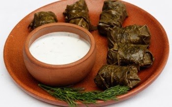
Bu həqiqətdir. Anam bilir ki, mən onun bişirdiyi, məhz onun bişirdiyi dolmanı necə sevirəm.
Әtin mətinə bir az düyü qatmaq lazımdır. Mən bunu gözəyarı edirəm. Amma deyəsən yaxşı alındı. Düyü də yarma yox, başqa cür deyil, məhs düyü olmalıdır ki, dolmanın içində plovda olduğu kimi düyü düyüdən seçilsin, bir-birinə yapışmış kütlə alınmasın. Sonra mətə lap xırda doğranmış baş soğan, nanə və ya reyhan (əgər varsa hər ikisindən) əlavə edirik. Әlbəttə üyüdülmüş qara istiot və adi xörək duzu da öz yerində. Hazır məti üzüm yarpaqlarına bükürük və çiy dolma alınır. Qazanın dibinə əvvəlcədən iki, üç kiçik sümüklü ətdən qoyuruq. Mən dolmanı mal ətindən hazırladığıma görə sümüklər də mal sümüyü olmalıdır. Sonra isə üstündən dolma düzülür.
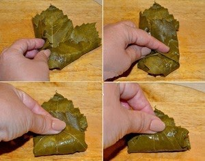
Dolma hazır olanda mən qatıq və sarımsaqdan sous hazırlayıram. Bunun üçün qatığa öz zövqümə üyğun əzilmiş sarımsaq qatıb, qarışdırıram ki, yaxşı həll olsun. Vəssalam. Dolmanın üstünə sous əlavə edib yemək olar. Mən bu gün belə elədim. Mən dolmanı yeyə-yeyə anamın hazırladığı cürbəcür, ləziz, ətirli xörəkləri xatırlayıram- içində qurudulmuş bütöv qara gavalı olan, böyük ət kürəciklərindən bişirilmiş iri noxudlu küftə-bozbaş, ətli, şabalıdlı plov, qovurma plov, qovurma səbzə plov, kələm dolması, göyərtidən hazırlanmış sərin dovğa, piti, düşpərə, ləvəngi, əsasən də kütüm-ləvəngi və nəhayət, şirniyatlar.
Aman tanrım! Təəssüf ki mənə bu şirniyyatları yemək olmaz. Sadə ləb-ləbidən (qoz ləpəsi ilə kişmiş qarışığ), kətəyə, şəkərburaya, paxlavaya, hətta şor-qoğalına qədər. Duzlu olduğundan şor-qoğalından mənə yəqin ki, bir az yemək olar. Sonra isə mən musiqini işə salıram.
"Yanıq kərəmi" havası səslənir, çünki, bu havanı mən uşaqlıqdan sevirəm. Qulaq asıram və kədərlənirəm. Nəyə görə mən tox ola-ola isti yerimdə kədərlənirəm? Özüm də bilmirəm. Bəlkə anam kimi dolma bişirə bilmədiyimə görə? Xeyr, bu belə də deyil. Bəs onda nəyə görə? Deməyəcəm. Sadəcə demək istəmirəm. Bu mənə aiddir. Bağışlayın!..
Rus dilindən tərcümə: Əlviz Əliyev